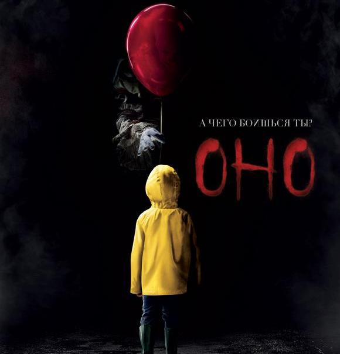
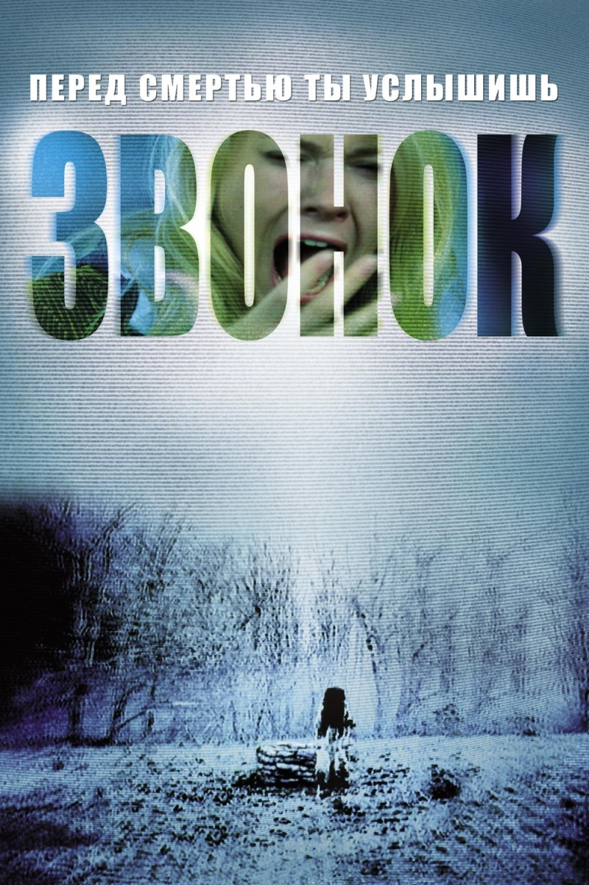
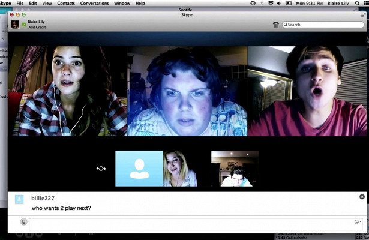
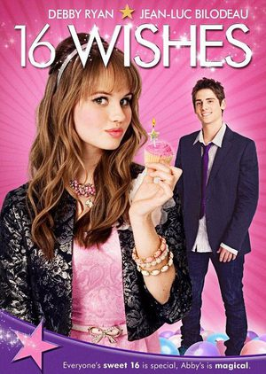
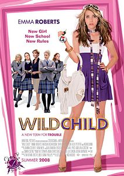
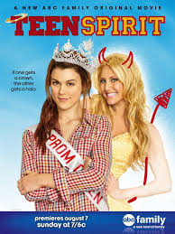

|  | Небольшой городок Дерри, штат Мэн. Октябрь 1988 года. Билл Денбро болеет, он не может пойти гулять со своим младшим братишкой Джорджи. Малыш уходит на улицу один. Домой он так и не вернется. Июнь 1989 года. Билл не может смириться с исчезновением брата. Во время летних каникул он намерен исследовать пустошь, куда могло попасть тело Джорджи. Тем временем в городе продолжают пропадать люди: сначала исчезает девочка из школы, где учится Билл, а потом местный хулиган. Полиция бессильна, никто не знает, кто стоит за этими преступлениями. В городе объявлен комендантский час. Билл вместе с такими же как он изгоями создает Клуб Неудачников. Каждого из этих подростков посещают странные видения. Вместе ребята приходят к выводу: на протяжение многих лет все жуткие события в Дерри происходят по вине некой мистической силы, которая является в образе танцующего клоуна Пеннивайза. В борьбе с этим древним злом Клубу Неудачников придется столкнуться лицом к лицу со своими страхами. И взрослые им в этой битве не помогут, ведь они просто ничего не замечают. |
|  | Как только кто-либо просматривает странную видеокассету, у него сразу же звонит телефон. Через неделю после этих событий каждая жертва неминуемо погибает. Жуткие и необъяснимые обстоятельства вызывают смятение, панику и внимание средств массовой информации.Главная героиня работает журналисткой. Ей крайне необходимо пролить свет на все происходящее, ведь ужасную кассету каким-то невообразимым образом смог увидеть ее сын. Чтобы спасти мальчика от нависшей угрозы, молодой женщине нужно во что бы то ни стало разобраться во всем. Будет ли гонка с самой смертью иметь успех? |
|  | Шестеро обычных школьников общаются в скайпе после школы. Непринужденный разговор постепенно скатывается к обсуждению трагедии, произошедшей год назад. Тогда их одноклассница Лора Барнс, тихая и скромная девушка, покончила с собой, после того, как неизвестный выложил компрометирующее ее видео с вечеринки. Несчастная не смогла справиться с позором и травлей и выпрыгнула в окно.И вот спустя столько времени, один неизвестный подключается к скайпу подростков и пытается выяснить, кто виновен в смерти девушки. Сначала ребятам кажется, что можно просто выйти из онлайна, но все оказывается не так просто. |
Действие картины начинается в 1996 году, год спустя событий предыдущей картины. Отец подростка Алекса Врика находит игру «Джуманджи», отдаёт ему, но Алекс не заинтересовывается ей. Тогда игра превращается в картридж для приставки. Алекс начинает игру, и она засасывает его внутрь. |
На орбитальной станции "Афина" проводятся эксперименты со скрещиванием генов ДНК разных живых существ. В результате мутации крыса превращается в свирепого монстра и убивает всех членов команды, последний уцелевший учёный покидает станцию на спасательной капсуле, успев спасти несколько контейнеров с мутагеном, при входе в атмосферу, капсула взрывается, обломки падают на землю. |
|  | На протяжении 8 лет Эбби Дженсен создавала список своих шестнадцати желаний, которые она планирует выполнить в день своего 16-летия. Желания самые разные — встретиться со звездой, иметь модную одежду, полюбить суши, закатить лучшую вечеринку шестнадцатилетия в мире. Лучший друг Эбби, Джей, влюблен в неё, но не говорит о своих чувствах. А в школе с Эбби постоянно соревнуется бывшая лучшая подруга Джея Криста Кук. У Кристы день рождения в один день с Эбби, и каждый раз она портит ей праздник. Эбби не нравится, что все относятся к ней, как к ребёнку. И вот в её шестнадцатый день рождения кто-то дарит ей коробку с 16 свечами. Стоит зажечь и задуть свечу с нужным номером — и желание сбывается. Эбби в восторге. А вот Джею с каждым разом все меньше нравится это волшебство. Наконец Эбби загадывает желание, чтобы к ней перестали относиться как к ребёнку. И все меняется. Она понимает, что ей уже не 16 лет, а 21, она взрослая женщина, а её лучший друг не помнит её. И после 12 часов ночи все происходящее нельзя будет изменить. Все же сумев заставить Джея поверить, что она — его лучший друг, Эбби загадывает верное желание и возвращает все назад. Она мирится с Кристой и узнает истинную причину её нелюбви к ней. Также она налаживает отношения с родителями и понимает, как хорошо оставаться ребёнком. Джей же наконец признается ей в своих чувствах. |
|  | Шестнадцатилетняя Поппи Мур — избалованная самовлюблённая девчонка из богатой семьи, живущая в Лос-Анджелесе. Её мать умерла пять лет назад, а отец женился во второй раз. Когда очередная её выходка переходит все границы, отец отправляет Поппи в английскую школу для девушек, чтобы привести дочь в чувство. Поппи предстоит жить в пансионе с английскими девочками, не отличающимися модными взглядами, которые, по мнению Поппи, считают, что «слова „маникюр“ и „педикюр“ — это латинские приветствия». Мур наживает себе врага в лице старосты школы, которая очень хочет, чтобы новенькую исключили, да и сама Мур не без помощи своих новых подруг рвётся на свободу и делает всё, что по меркам этого колледжа выходит за рамки разумного. Но директриса непреклонна, она обещала отцу Поппи, что поможет девушке, и стоит на своём, пытаясь лишь охладить пыл молодой американки. Новые английские подруги Поппи придумывают новый план, который должен сработать незамедлительно. У директрисы есть сын Фредди, приезжающий на выходные в пансион к матери. Поппи должна соблазнить его и начать встречаться с ним, а так как в колледже запрещены любые отношения между парнями и девушками, то Поппи должны сразу же выгнать. |
|  | Эмбер Поллок красивая, стервозная и популярная девушка, имеет одну цель — стать королевой бала. Однако, после избрания Эмбер, желая прикоснуться к короне, умирает от удара током. В это время на развилке между Раем и Адом, ангел по имени Супервизор дает ей задание: вернуться в виде призрака, найти непопулярную девушку и сделать из неё королеву бала за одну неделю. Лиза Соммерс должна стать королевой школьного выпускного бала, который состоится через одну неделю, иначе Эмбер отправится в ад. |